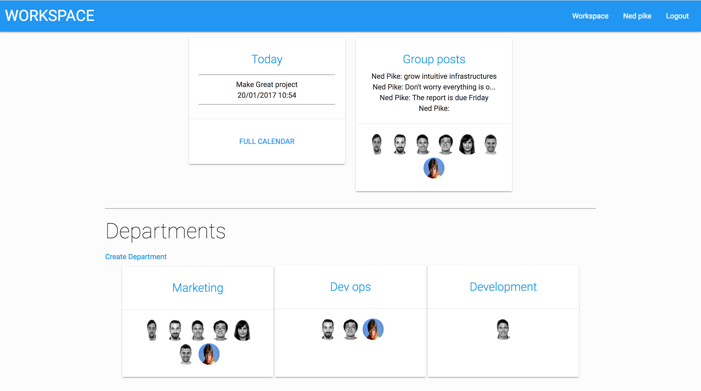

Projects
Animal Aid

I’m Ned, a junior full stack web developer who has just completed the Web development Immersive course at General Assembly Sydney. I'm looking for a full time role in Sydney. I love solving problems, logic and diving
Workspace
I’m Ned, a junior full stack web developer who has just completed the Web development Immersive course at General Assembly Sydney. I'm looking for a full time role in Sydney. I love solving problems, logic and diving
Jungle.JS
I’m Ned, a junior full stack web developer who has just completed the Web development Immersive course at General Assembly Sydney. I'm looking for a full time role in Sydney. I love solving problems, logic and diving
When Worlds Collide

I’m Ned, a junior full stack web developer who has just completed the Web development Immersive course at General Assembly Sydney. I'm looking for a full time role in Sydney. I love solving problems, logic and diving